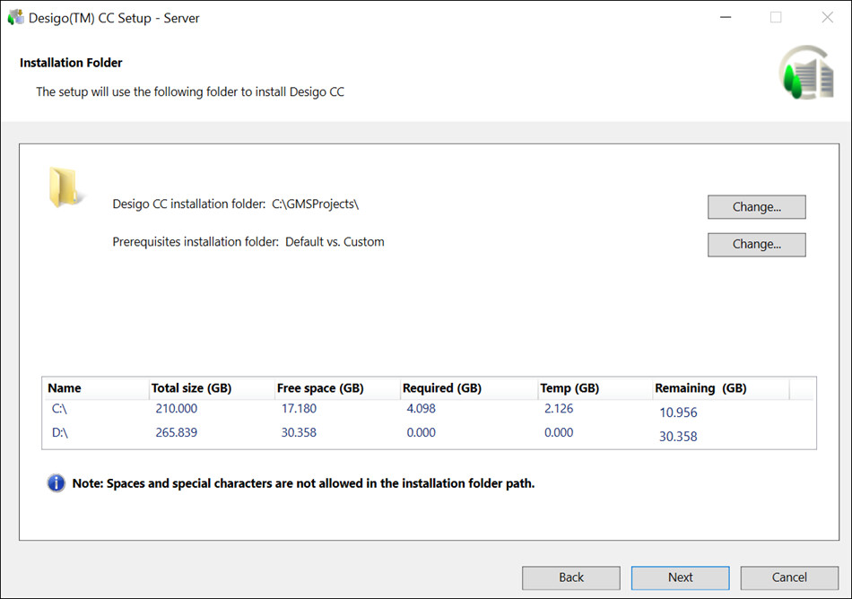
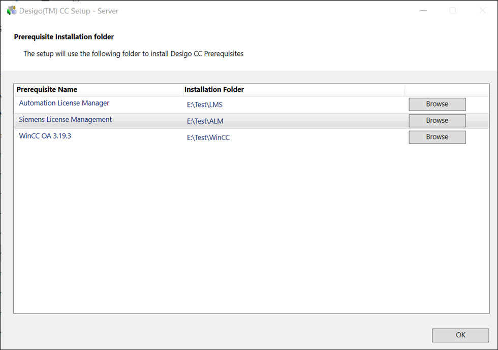

Verify the Installation Folder Selection
- In the Installation Folder dialog box, accept the default installation directory location [Installation Drive]:\[Installation Folder] for the installation or choose a new location by clicking Change.
The Installer calculates and displays the disk space required for the selected setup type installation on the selected drive and the temporary disk space required only for the time of installation (always calculated only for the system drive). Click Next.
NOTE 1: No illegal characters or sequences are permitted in the directory path.
NOTE 2: If a negative number in red displays in the Remaining Space field, you must re-run the setup after freeing the required disk space. (See Tips to Free Up Disk Space in Installation Folder > Verify the Installation Environment)
NOTE 3: The installation folder will inherit the ACL rights (Access Control List) from the installation drive. For example, if C is the installation drive the folder C:\[Installation Folder] will inherit the ACL rights from C drive. These rights define permissions given to users related to operations for working with the folder. For more information, refer to the Cybersecurity Guidelines document (A6V11646120 ) for securing this. 
- For Prerequisite Installation Folder, choose a new location by clicking Change.
- The Prerequisite Installation Folder is displayed and installer can browse the new installation path to install Desigo CC Prerequisites.
